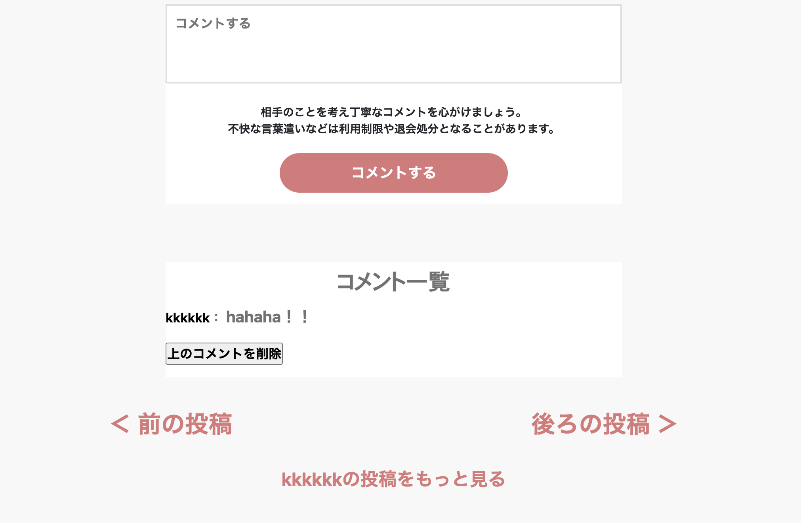

Blog'in-Com（オススメ記事投稿アプリ）
開発環境
Ruby / Ruby on Rails / MySQL / GitHub / Render / Visual Studio Code / Trello / Notion
-
概要
制作時間 70時間 URL https://original-app1.onrender.com ID f1111 PASS 8817
OUTLINEアプリケーションの概要
オリジナルアプリケーションとして、自身のオススメする記事を共有するSNSを開発しました。
主な機能は、ユーザー登録、投稿、いいね、お気に入り、投稿検索、コメント、既読機能、レビュー機能、ランキング機能です。
-
開発に至った経緯
友人と会話をしていた際、情報発信をしたいがめんどくさくて始められないという課題を抱えている人
がいることに気づきました。発信自体はしたいが恥ずかしい、見てもらえないからやっても仕方ないと思っています。
そんな中でもお互いが発信者・読者という関係性の中でやらざるえない環境による習慣化と成功体験を
積みましょう。 -
開発で工夫したこと
1つ目:投稿詳細ページで画面下部に前の投稿・後ろの投稿部分をクリックすることで前後の投稿に進むことができる機能を実装しました。
2つ目:投稿した記事のURLを貼り付けられたURLを投稿詳細ページで確認するとクリックするだけでオススメの記事のサイトに遷移できるようにしました。
3つ目:新規投稿ページや編集ページで画像投稿をする際にどの画像を投稿するか確認できるようにプレビュー機能を実装しました。
いずれも、知人数名ほどに実際に利用してもらい、ユーザーヒアリングを行いながら改善を行っています。
-
今後実装したいと思っていること
以下の２つの機能の追加を考えています。
１、投稿に対して５段階でユーザーがレビューできる機能の追加
2、APIを利用したログイン機能(Google)・お問合せに関する自動返信BOT(LINE)機能の追加